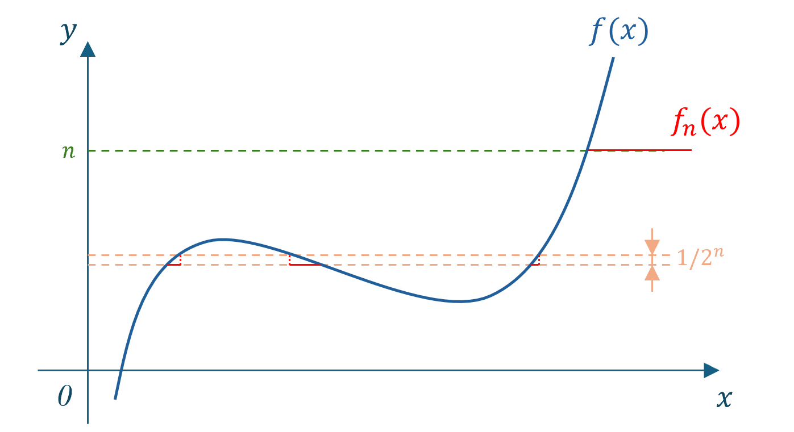

Measurable Function¶
Functions discussed in this chapter are defined on measurable sets, whose value could be generalized real number, i.e. \(\mathbb{R}\) including \(\pm \infty\).
Definition of Measurable Function
Assume function \(f\) has defined on measurable set \(D\). If \(\forall \alpha\in \mathbb{R}\), set
is also measurable, then we call \(f\) is a measurable function on \(D\).
Example. Continuous function on an interval \(D\subset \mathbb{R}\) is a measurable function.
-
For an open interval \(D\), this is easy.
-
For an arbitrary interval \(D\), the original image of \({f>\alpha}\) would differ from open sets with at most \(2\) points.
Characteristic Function
Assume \(A\subset X\), then define a characteristic function \(A\) as
Measurability of Characteristic Function
For measurable set \(D\), denote \(\chi_D\) as its characteristic function, then
So we could prove \(\chi_D\) is measurable function.
Properties¶
Properties of Measurable Function
Assume \(f(x)\) is measurable on \(E\), then the following sets are all measureable.
(i) \(\{f\leq \alpha\}\) (ii) \(\{f\geq \alpha\}\)
(iii) \(\{f<\alpha\}\) (iv) \(\{f=\alpha\}\)
(v) \(\{f<+\infty\}\) (vi) \(\{f=+\infty\}\)
(vii) \(\{f>-\infty\}\) (viii) \(\{f=-\infty\}\)
-
(i) \(=E-\{f>\alpha\}\)
-
(ii) \(=\bigcap_{k=1}^\infty\{f>\alpha-\frac{1}{k}\}\) (length decrease, so we choose inferior)
-
(iii) using (ii) with same logic of proving (i)
-
(iv) using (i) amd (ii)
-
(v) \(=\bigcup_{k=1}^\infty\{f<k\}\) (length increase, so we choose superior)
-
(vi) use (v) with same logic of proving (i)
-
(vii) same logic of proving (i)
-
(viii) use (vii) with same logic of proving (i).
The above (i), (ii) and (iii) are equivalent definition of measurable function, but (iv) is not.
-
"\(\Rightarrow\)". Let \(\forall \alpha\), \(\alpha=r\).
-
"\(\Leftarrow\)". Notice that \(\forall \alpha, \exists \{r_n\}\), such that \(r_n\in \mathbb{R}\), and \(r_1>r_2>\cdots\), and \(r_n\rightarrow \alpha\), so
which means \(f\) is measurable.
When \(\{f=r\}\) is measurable, we could not deduce the same result. Bacause let \(A\) to be a non-measurable set, define
then \(\forall r\in \mathbb{Q}\), \(\{f=r\}=\varnothing\) is measurable, but let \(\alpha=1.5\),
is not measurable, so \(f\) is not measurable.
Region Extension
(i) Assume generalized real function \(f(x)\) is defined on \(D_1\cup D_2\). If \(f(x)\) is measurable on \(D_1\) and \(D_2\), then \(f(x)\) is also measurable on \(D_1\cup D_2\).
(ii) Assume \(f(x)\) is measurable on \(D\). If \(A\subset D\) is also measurable, then \(f(x)\) is also measurable on \(A\).
(i) \(\{x\in D_1\cup D_2:f>\alpha\}=\{x\in D_1: f>\alpha\}\cup \{x\in D_2: f>\alpha\}\) and by measure operation.
(ii) \(\{x\in A: f>\alpha\}=\{x\in D: f>\alpha\}\cap A\) and by measure operation.
Lemma of functions
Assume \(f(x)\), \(g(x)\) are measurable on \(E\), then \(\{f>g\}\) is also measurable.
\(\forall \varepsilon_r=\frac{1}{r},r\in \mathbb{N}^+\), we have
so \(\{f>g\}\) is measurable.
Basic Operations¶
Basic Operations of Measurable Function
Assume \(f(x)\), \(g(x)\) are measurable function on \(D\), then the following functions are measurable.
(i) \(cf(x) (c\in \mathbb{R})\). (ii) \(f(x)+g(x)\). (iii) \(f(x)\cdot g(x)\).
(i) move \(c\) to the side of \(\alpha\).
(ii) same logic with Lemma.
(iii) use \(4f(x)\cdot g(x)=[f(x)+g(x)]^2-[f(x)-g(x)]^2\). You only need to consider whether \(f^2(x)\) are measurable, which is easy to see. Notice that \(\forall\alpha\geq 0\),
is measurable, and \(\forall \alpha<0\),
is measurable.
Example. Assume \(f\) is defined on measurable set \(D\), prove: if \(f^2\) is measurable on \(D\) and \(\{f>0\}\) is measurable, then \(f\) is measurable on \(D\).
- \(\forall \alpha\geq 0\),
is measurable.
- \(\forall \alpha<0\),
is measurable.
Example. Assume \(f\) is a measurable function on \(D\), prove: for all open set \(G\subset \mathbb{R}\) and closed set \(F\subset \mathbb{R}\),
are measurable.
Known from configuration of set, \(\forall\) open set \(G\subset \mathbb{R}\), there exists \(\{a_n\}\) and \(\{b_n\}\), such that \(a_n<b_n\), and \(G=\bigcup\limits_{n=1}^\infty(a_n,b_n)\), so
is measurable. Notice that \(f^{-1}(F)=f^{-1}(\mathbb{R}-F^c)=D-f^{-1}(F^c)\) is also measurable.
Limit superior & limit inferior¶
Limit superior & limit inferior
Sequence of Function.
Similarly, given a sequence of function \(\{f_n(x)\}_{n\geq 1}\) we have limit superior
and limit inferior
Theorem for measurability of Limit
Assume \(\{f_n(x)\}_{n\geq 1}\) is a sequence of measurable functions on measurable set \(D\), then the following functions are all measurable.
- For expression \(\ref{supinf-function}\), we can write it as
where the latter one is measurable.
- For expression \(\ref{limit-supinf-function}\), we could use conclusion from \(\ref{supinf-function}\).
Example. Assume \(f_n\) is a measurable function on \(D\). Prove: Set
is measurable.
\(f_n\) converges, iff its limit superior and inferior are of the same. So we define
both of which are measurable by Theorem for limit. Then consider
since the latter is measurable according to Lemma of functions, \(\{F=f\}\) is measurable.
Almost Everywhere¶
Definition of Almost Everywhere of a Proposition
Assume \(D\) is measurable, and proposition \(P(x)\) is related with points in \(D\). If there exists a zero-measure set \(E\subset D\), such that \(P(x)\) holds on \(D\backslash E\), then we call \(P(x)\) holds almost everywhere on \(D\).
We denote this statement as
Approximation¶
Approximation with Simple Function¶
Simple Function
Assume \(f\) is a function on measurable set \(D\). If \(f(D)\) is composed of finite points \(\{a_k\}_{k=1}^n\), and sets \(E_k=\{f=a_k\} (k=1,2,\cdots, n)\) are all measurable, then we call \(f\) is a simple function on \(D\).
Apparently, here \(f(x)\) could be expressed by finite linear combination of characteristic functions, i.e.
Approximate measurable function with sequence of simple functions
If \(f(x)\) is measurable on \(D\), then there exists a sequence of simple functions \(\{f_k\}_{k=1}^\infty\), such that for every point \(x\in D\), \(\{f_k\}_{k\geq 1}\) converges to \(f(x)\). Specially, if
(i) \(f\) is non-negative, then \(\{f_k\}_{k\geq 1}\) is monotonically increasing.
(ii) \(f\) is bounded, then \(\{f_k\}_{k\geq 1}\) converges uniformly to \(f(x)\).
Use a special construction.
Formulate a sequence of function which converges to \(f(x)\). This is a little tricky.
Define
Look the following image for intuitional impression.

Now we show that \(f_n(x)\) corvergese to \(f(x)\). For fixed point \(x\in D\), if
(i) \(f(x)=\infty\). Then \(f_n(x)=n\rightarrow \infty=f(x)\). The same for \(f(x)=-\infty\).
(ii) \(-\infty<f(x)<+\infty\). Then for sufficient large number \(n\), there exists unique \(k_n\) such that \(-n 2^n+1\leq k_n \leq n2^n\) and
which means \(f_n(x)=\frac{k_n-1}{2^n}\), satisfying
Let \(n\rightarrow \infty\), we have \(f_n(x)\) converges to \(f(x)\).
- Specially, if \(f(x)\) is non-negative, for \(f(x)=+\infty\), then \(f_n(x)=n\) is monotonically increasing.
For \(f(x)<\infty\), if \(f(x)<n\), we have \(f(x)=\frac{k-1}{2^n}\) for some \(k\) such that \(\frac{k-1}{2^n}<f(x)<\frac{k}{2^n}\), then for \(f_{n+1}(x)\), we partition this interval into two parts, which are
the former part \(f_{n+1}(x)=f_n(x)=\frac{k-1}{2^n}\), while the latter part gives \(f_{n+1}(x)=\frac{2k-1}{2^{n+1}}>f_n(x)\), so it is monotonically increasing.
for \(\infty>f(x)\geq n\), this is similar to \(\infty\).
- Specailly, if \(f(x)\) is bounded, denote its upper bound as \(M\), so when \(n>M\), we have \(|f(x)-f_n(x)|<\frac{1}{2^n}\) on all \(x\in D\), which means \(f_n(x)\rightrightarrows f(x)\).
Example. Assume \(f\) is differentiable on \(\mathbb{R}\), prove \(f'(x)\) is measurable.
\(f\) is differentiable, so \(f\) and \(f(x+\frac{1}{n})\) is continuous, thus measurable. So
\(f_n\) is measurable, so \(f'\) is also measurable.
Uniform Convergnce a.e.¶
Lemma: use language of Set to describe convergence
Assume \(\{f_k(x)\}_{k\geq 1}\), \(f(x)\) are measurable function on \(a.e.x \in E\), and \(m(E)<\infty\). If \(f_k(x)\rightarrow f(x), a.e.x \in E\), then \(\forall \varepsilon>0\), let \(E_k(\varepsilon)=\{x\in E: |f_k(x)-f(x)|\geq \varepsilon\}\), then we have
We have the following equivalent statement for point-wise convergence.
Note that we could have an equivalent statement at the last
but \(\bigcap_{\varepsilon>0}\) is not denumerable, so the in the following proof, we have to choose a denumerable set like \(\mathbb{Q}\) or \(\frac{1}{r}\).
Now we have a equivalent statement of \(f_k(x)\rightarrow f(x), a.e.x\in E\), that is, expression \(\ref{equiv-pointwise-convergence}\). Then its opponent proposition \(f_k(x)\nrightarrow f(x)\) could be expressed by
That is,
which has zero-measure according to \(a.e.x\in E\), so by limit operations in measure, we have
The first equation holds because \(E_k(\varepsilon)\) is measurable (\(f_k, f\) are all measurable functions) and \(\bigcup_{k=N}^\infty E_k(\varepsilon)\) is monotonically decreasing when \(N\rightarrow \infty\). The last equation holds because the left side of equation \(\ref{non-convergence}\) has zero-measure (which means the item to be unioned should have zero-measure).
Egoroff Theorem
Assume \(\{f_k(x)\}_{k\geq 1}\) is a measurable function which is bounded on \(a.e.x\in E\), and \(m(E)<\infty\). If \(f_k(x)\rightarrow f(x), a.e.x\in E\), then \(\forall \delta>0\), \(\exists \text{ measurable set } E_\delta\subset E\), such that \(m(E_\delta)\leq \delta\) and
Choose \(\varepsilon=\frac{1}{r}\) and define
then by condition of the theorem and Lemma, \(\forall \delta>0\), \(\forall r\in \mathbb{R}\), \(\exists N_r\), \(\forall N \geq N_r\),
Then we have to sum up there measure. That is, let \(E_\delta=\bigcup_{r=1}^\infty \bigcup_{k=N}^\infty E_k\left(\frac{1}{r}\right)\), which satisfies
Check that
Notice that \(f_k\rightrightarrows f, a.e.x\in A\), iff \(\sup_{x\in A}|f_k(x)-f(x)|\rightarrow 0 (k\rightarrow \infty)\). If we let \(A=E\backslash E_\delta\), this holds apparently.
Note that the condition \(m(E)<\infty\) in the above theorem could not be removed.
Example. \(f_n(x)=x^n\) converges to \(f(x)=\begin{cases}0,\quad 0<x<1 \\ 1,\quad x=1 \end{cases}\) point-wisely, but not uniformly. If we remove a sufficiently small set \((1-\delta,1]\), then \(f_n(x)\rightrightarrows f(x)\) uniformly.
Extension of Measurable Function¶
The following theorem is the main result of this part.
Lusin Theorem
Assume \(f(x)\) is a measurable function \(a.e.\) on \(E\), then \(\forall \delta>0\), \(\exists\) closed set \(F\subset E\), s.t. \(m(E\backslash F)<\delta\), and \(f(x)\) is a continuous function on \(F\).
Using Theorem in Mathematical Analysis for uniform convergent function, that is, the convergent function of uniformly convergent function sequence is continuous(Here notice we have to cut off a closed set from \(E\), which might be infinite). So we have to make use of Egoroff Theorem.
(i) \(f\) is a simple function on \(E\).
From conclusion in Property of Simple Function, there exists measurable sets \(E_i(i=1,2,\cdots,N)\), such that \(E=\bigcup_{i=1}^N E_n\), \(E_i\cap E_j=\varnothing\), and
From Theorem of Approximation for measurable sets, \(\forall \delta>0\), because \(E_i\) is measurable, \(\exists\) closed set \(F_i\subset E_i\), such that \(m(E_i\backslash F_i)<\delta/N\), and \(\chi_{E_i}(x)\in C(F_i)\), or to be more specific, is constant on \(F_i\). So from \(F:=\bigcup_{i=1}^N F_i\subset E=\bigcup_{i=1}^N E_i\), we have
(ii) \(m(E)<\infty\).
From conclusion in Approximation with simple function, there exists a sequence of simple function \(\{\psi_k\}_{k\geq 1}\) such that \(\psi_k(x)\rightarrow f(x)\).
Then since \(m(E)<\infty\), we could use Egoroff Theorem for the above function sequence. That is, \(\forall \delta>0\), \(\exists \text{ measurable function }E_\delta\subset\), such that \(m(E\backslash E_\delta)<\delta/2\) and
The following method is a little tricky. \(\forall k\), from (i) we could know for simple function \(\psi_k(x)\), there exists closed set \(F_k\subset E\backslash E_\delta\), such that \(m((E\backslash E_\delta)\backslash F_k)<\delta/2^{k+1}\) and \(\psi_k(x)\in C(F_k)\). Define \(F=\bigcap_{k=1}^\infty F_k\) which is still a closed set.
Now we have to prove that the part we remove is small enough. That is, since
so
Thus, \(\psi_k(x)\) uniformly converges to \(f(x)\) on \(F\), by Theorem in Mathematical Analysis for uniform convergent function, meaning \(f(x)\in C(F)\).
(iii) Last situation. \(m(E)=\infty\).
We have to transform this problem into (ii), that is, use finite-measure set to intersect.
Define \(E_k:=E\cap \{x\in E: k-1 \leq |x|< k\}\). Then \(E=\bigcup_{k=1}^\infty E_k\), and \(E_i\cap E_j=\varnothing\).
So \(\forall k\), there exists closed sets \(F_k\subset E_k\), such that \(m(E_k\backslash F_k)<\delta/2^{k+1}\), and \(f\in C(F_k)\). Consider define \(E_\delta=\bigcup_{k=1}^\infty F_k\) (see difference with (ii)) which is just a measurable set, or to be more specific, a \(F_\sigma\) set. But again by using Theorem of Approximation for measurable sets, there exists a closed set \(F\subset E_\delta\), such that \(m(E_\delta-F)<\delta/2\).
Now we check the measure of the removal part. Since
we have
Thus we are done.
Continuous Extension Theorem
Assume \(f(x)\) is a measurable function bounded \(a.e.\) on measurable set \(E\subset \mathbb{R}\), then \(\forall \delta>0\), there \(\exists\) closed set \(F_\delta\subset E\) and continuous function \(g(x)\) on whole space \(\mathbb{R}\), such that \(m(E-F_\delta)<\delta\) and \(g(x)=F(x),\forall x\in F_\delta\), and
which naturally satisfies the condition in the theorem.
By Lusin Theorem, \(\forall \delta>0\), there exists closed set \(F\subset E\), such that \(m(E-F)<\delta\), and \(f\in C(F)\). Now the only problem is, how to extend this continuoud function on \(F\) to all space \(F\) and satisfy the so-called boundary condition \(\ref{boundary-condition}\).
By Conposition of closed set, \(F\) could be expressed by \(\mathbb{R}-G\), where \(G\) is a union of denumerable open intervals which are mutually disjoint. That is,
where at most \(2\) open intervals are infinite intervals. From here we formulate a function on \(\mathbb{R}\)
Convergence in Measure¶
Example. \(\forall n\in \mathbb{N}^+\), \(\exists ! k,i\in \mathbb{N}^+\), such that \(n=2^k+i\), where \(0\leq u\leq 2^k\). Formulate a function sequence
So for every point \(x\in [0,1]\), \(f_n(x)\) does not converge.
For the above example, we could consider its convergence in measure, or probability.
Still the above example.
If we define a set
then its measure
which means for sufficient large \(n\), the frequency of \(0\) is close to \(1\). So we call \(\{f_n(x)\}\) converges to \(f(x)=0\) in measure.
Definition of convergence in measure
Assume function \(f\) and function sequence \(\{f_n\}_{n\geq 1}\) are measurable function bounded \(a.e\) on \(D\). If \(\forall \delta>0\), we have
then we call \(\{f_n\}\) converges to \(f\) in measure on region \(D\).
Using \(\varepsilon-N\) language, we have
Generally speaking, "convergence point-wisely" has no apparent relationship with "convergence in measure", readers could see the following exmaple.
Example. Define \(f_n(x)=\chi_{(n,\infty)}(x)\), \(f(x)=0\), then \(\forall x\in \mathbb{R}\), we have \(f_n(x)\rightarrow f(x)\). But if we let \(\delta=1/2\), then \(\{|f_n-f|\geq 1/2\}=(n,\infty)\), whose measure \(m(\{|f_n-f|\geq 1/2\})=\infty\), which does not converges to \(f(x)\) in measure.
Uniqueness of Convergent Function¶
Uniqueness of Convergent Function
If \(f_n(x)\) converges to \(f(x)\) and \(g(n)\) on \(E\) in measure, then
Because \(|f(x)-g(x)|\leq |f(x)-f_n(x)|+|f_n(x)-g(x)|\) (at least one set of the right side should be larger then \(\varepsilon/2\) if \(|f(x)-g(x)|>\varepsilon\)), so
So by subadditivity, we have
Relationship between two Convergences¶
Lebesgue's Theorem: Relationship between two Convergences
Assume \(m(E)<\infty\), \(\{f_n(x)\}\) is a measurable function sequence \(a.e.\) on \(E\). If \(\{f_n\}\) converges to function \(f(x)\) \(a.e.\) on \(E\), where \(f(x)\) is a bounded function \(a.e.x\in E\), then \(f_n(x)\) converges to \(f(x)\) in measure.
Use \(m(E)<\infty\) to show that \(f_n(x) \rightrightarrows f(x)\), which could gives convergence in measure.
By Egoroff Theorem, because \(m(E)<\infty\), we have point-wise convergent function sequence \(\{f_n\}\) also converges uniformly to \(f(x)\). That is, we have \(\forall \delta>0\), \(\exists\) measurable set \(E_\delta\), such that \(m(E_\delta)<\delta\) and
Then by definition of uniform convergence, we have \(\forall \varepsilon>0\), \(\exists N>0\), \(\forall n\geq N\),
which means the set
so
and we are done.
Note that \(m(E)<\infty\) is not necessary, see that we use the uniform convergence to prove, which is the most important.
Riesz Theorem
Assume function \(f\) and function sequence \(\{f_n\}\) are measurable function \(a.e.\) on \(E\), where \(f\) and \(\{f_n\}\) are bounded \(a.e.\) on \(E\). Then
(i) If \(\{f_n\}\) converge to \(f\) in measure, then there exists subsequence \(\{f_{n_j}\}\) convergent to \(f\) \(a.e.x\in E\).
(ii) If \(m(E)<\infty\), and \(\{f_n\}\) converge to \(f\) \(a.e.x\in E\), then \(\{f_n\}\) converge to \(f\) in measure.
We hope to use \(\delta\) to get a subsequence of \(f_n\).
\(\forall k\in \mathbb{N}^+\), let \(\delta_k=\frac{1}{2^k}\), so \(f_n\overset{m}{\rightarrow}f\) implies
So there exsits \(n_k\), such that
Notice \(\{m(\{|f_n-f|\geq \delta_k\})\}_{n\geq 1}\) is a number sequence, so \(n_1<n_2<\cdots\).
Define
and for every \(p\), measure
let \(p\rightarrow \infty\), we have \(m(E)=0\). Thus for every \(x\in D-E\), i.e.
which means, \(\exists p_0\geq 1\), such that
meaning \(\lim\limits_{k\rightarrow \infty}f_{n_k}=f\).
\(\forall \delta>0\), \(\forall \varepsilon>0\), since \(m(D)<\infty\), by Egoroff Theorem, there exists measurable set \(E\subset D\), such that \(m(D-E)<\varepsilon\), and \(f_n\rightrightarrows f, a.e.x\in E\). That is, there exsits \(N\), such that
which means
meaning
Lemma: Sufficient and Necessary Condition for convergence in measure
Assume function \(f\) and function sequence \(\{f_n\}\) are measurable on \(E\) where \(m(E)<\infty\). Then \(f_n(x)\) converges to \(f(x)\) in measure, iff \(\forall\) subsequence \(\{f_{n_j}\}\), \(\exists\) a subsequence \(\{f_{n_{j_i}}\}\) such that
- "\(\Rightarrow\)".
We prove \(\forall\) subsequence \(\{f_{n_j}\}\), \(f_{n_j}\) converges to \(f\) in measure, which holds apparently because \(f_n(x)\) converges to \(f(x)\) in measure.
Then apply Riesz Theorem to \(f_{n_j}\) and we are done.
- "\(\Leftarrow\)". We make use of contradiction. That is, if \(\{f_n\}\) does not converges to \(f\) in measure, i.e. \(\exists \varepsilon_0>0\),
So \(\forall j, \exists n_j\), s.t.
But if there exists a subsequence \(\{f_{n_{j_i}}\}\) such that
then by Lebesgue's Theorem (\(m(E)<\infty\)), we have \(f_{n_{j_i}}\overset{m}{\rightarrow}f\), which contradicts inequation \(\ref{contradiction}\).